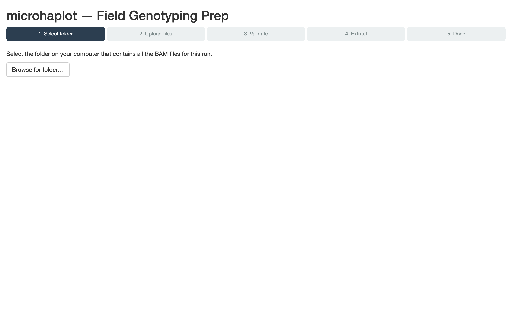
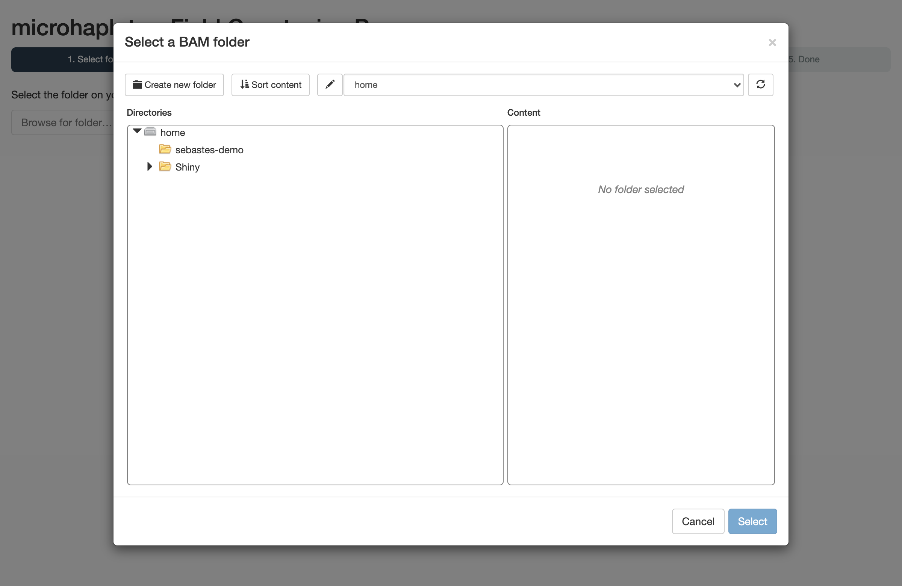
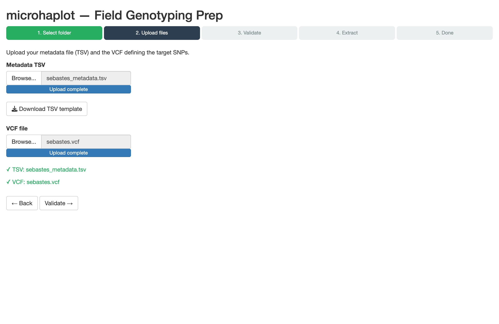
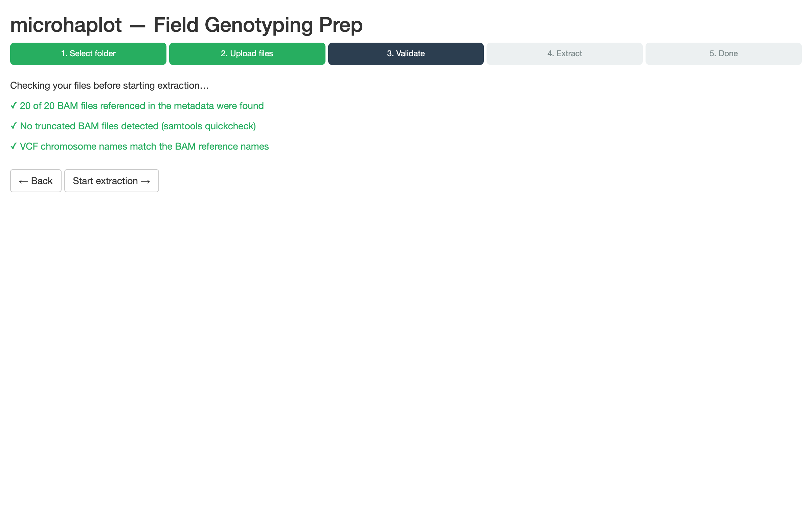
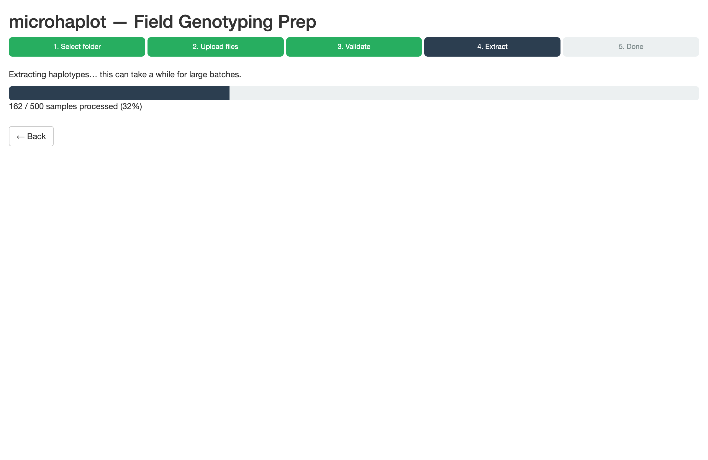
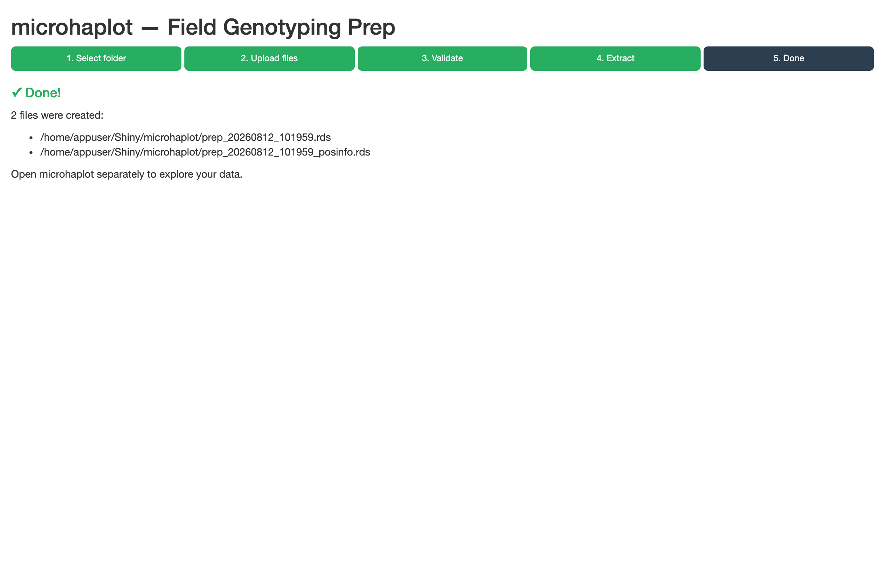

vignettes/microhaplot-docker-extraction.Rmd
microhaplot-docker-extraction.RmdThis vignette takes you from a folder of BAM files to a dataset you can explore in microhaplot, without installing R, Perl, or samtools on your machine, and without typing a single line of R. Everything runs inside Docker, and all the interaction happens in your web browser.
It is aimed at people who produce the data — field technicians, lab staff, students — rather than at bioinformaticians. If you are comfortable in an R console and already have the package installed, the prepHaplotFiles() function documented in the microhaplot data prep vignette does the same job in one call.
You need two things before starting:
microhaplot ships as a single Docker image that runs two separate apps:
| App | Address | What it does |
|---|---|---|
| Field Genotyping Prep | http://localhost:3839 | Turns BAM + VCF into a .rds dataset |
| microhaplot | http://localhost:3838 | Explores, filters, and genotypes that dataset |
The important part is what they share. Both apps run with the same home directory, and that home directory is a folder on your machine, mounted into both containers. So a file the prep wizard writes is, physically, the same file the main app reads — no copying between tools, no restarting anything, and nothing hidden inside a container that you can’t get at from your own file browser.
That folder is ./microhaplot-data by default, and it is the only place you ever need to put anything.
Download docker-compose.yml — you don’t need to clone the repository:
curl -O https://raw.githubusercontent.com/ltalignani/microhaplot-2/master/docker-compose.ymlCreate the shared data folder next to it:
mkdir -p ./microhaplot-dataPut your BAM files and your VCF into a subfolder of ./microhaplot-data. Using a subfolder per run, rather than the folder root, keeps your data separate from the Shiny/ directory the apps create there for their own use.
A container can only see what you give it, so BAM files sitting elsewhere on your machine are invisible to the wizard — and copying a few hundred gigabytes of alignments into ./microhaplot-data is not a reasonable answer.
Point MICROHAPLOT_INPUT_DIR at the folder instead and it is mounted, read only, as input inside the shared folder:
MICROHAPLOT_INPUT_DIR=/path/to/my/bam/folder docker compose upOr, to avoid retyping it, put the same line in a .env file next to docker-compose.yml. In the wizard, the folder is then at home → input. Nothing is copied, and nothing in it can be modified: microhaplot only ever reads your alignments, and writes its output to ~/Shiny/microhaplot.
If you just want to follow along, microhaplot bundles a demo dataset of 20 rockfish samples — 20 BAM files, a VCF, and a ready-made metadata TSV. Unpack it with:
mkdir -p ./microhaplot-data/sebastes-demo
tar xzf "$(Rscript -e 'cat(system.file("extdata", "sebastes_bam.tar.gz", package = "microhaplot"))')" \
-C ./microhaplot-data/sebastes-demoIf you don’t have R on your machine at all, download inst/extdata/sebastes_bam.tar.gz from the repository and unpack it into ./microhaplot-data/sebastes-demo by hand.
Either way you should end up with:
./microhaplot-data/sebastes-demo/
├── s6.bam, s11.bam, … (20 BAM files)
├── sebastes_metadata.tsv
└── sebastes.vcfAlongside your BAM files, the wizard needs a tab-separated file with one row per individual and a header row naming four columns:
| Column | Required | Meaning |
|---|---|---|
bam_file |
yes | File name of the BAM, as it appears in the folder |
individual_id |
yes | Your identifier for the individual; must be unique |
group |
no | Population, site, or batch label used for grouping in the main app |
color |
no | Hex colour (#RRGGBB) used for that group in plots |
The first rows of the demo file look like this:
bam_file individual_id group color
s6.bam s6 gr #1f77b4
s11.bam s11 cu #ff7f0e
s13.bam s13 p #2ca02cYou don’t have to write this file from memory — step 2 of the wizard has a Download TSV template button that gives you the header row to fill in.
From the folder containing docker-compose.yml:
docker compose upThe first run downloads the image, which takes a few minutes. Subsequent runs start in seconds. Leave the terminal open — closing it stops the apps.
Then open http://localhost:3839 in your browser for the prep wizard.
The wizard has five steps, shown as a progress indicator across the top. You can go back at any point before extraction starts.

Click Browse for folder… and pick the folder holding your BAM files — sebastes-demo if you’re using the demo data, or input if you mounted your own folder with MICROHAPLOT_INPUT_DIR above.

This picker browses the container’s filesystem, not your machine’s. That sounds like it should be a problem, and it is the one place where the Docker setup might feel surprising — but it is also what makes everything else work without explanation. The container’s home directory is your shared folder, so the home entry you see here is exactly ./microhaplot-data, and the subfolder you created is sitting right there.
Once a folder is selected, its path appears in green and a Next → button becomes available.

Provide two files here:
.vcf and gzipped .vcf.gz are accepted.Unlike step 1, these are genuine uploads, so you can pick them from anywhere on your machine, not only from the shared folder. When both are in place, a Validate → button appears.

Nothing is extracted yet. This step runs every check up front and reports all the problems it finds at once, rather than stopping at the first one:
individual_id values are present and unique, and any color values are valid hex codes;samtools quickcheck);On the demo data it reports three green confirmations: the BAM files were all found, none is truncated, and the VCF and BAM reference names agree. (The TSV schema check has no confirmation line of its own; it only speaks up when something is wrong.) If a check fails, fix it and click back to the relevant step — the Start extraction → button only appears once validation is clean.

Extraction runs in a background process, so your browser stays responsive, and the progress bar advances sample by sample. This is the same prepHaplotFiles() machinery documented elsewhere — the wizard is a front end to it, not a second implementation.
The screenshot above is from a 500-sample run, so that the bar has something to show. On the 20-sample demo dataset the whole extraction is over in a couple of seconds and this screen barely appears; on a real field campaign of several hundred samples, expect minutes.

The wizard reports the two files it wrote and where they are:
/home/appuser/Shiny/microhaplot/prep_20260812_101959.rds
/home/appuser/Shiny/microhaplot/prep_20260812_101959_posinfo.rdsThose are paths inside the container — /home/appuser is the container’s home directory, which is your shared folder.
The run is named prep_ followed by a timestamp, so repeated runs never overwrite each other. On your own machine these files are under ./microhaplot-data/Shiny/microhaplot/.
Now go to http://localhost:3838. The Data Set dropdown lists every dataset present in the shared folder: the bundled fish1.rds and fish2.rds examples, plus your own prep_<timestamp>.rds runs. Pick yours and carry on with the microhaplot walkthrough vignette, which covers filtering, genotype calling, and population genetics.
You do not need to restart anything. The main app reads the same directory the wizard just wrote to, so a dataset extracted a moment ago is already in the list.
Extracted from the demo data, you should see 616 haplotype observations across 8 loci in 20 individuals, split into four groups (cu, gr, p, w).
In the terminal running the apps, press Ctrl-C, then:
docker compose downEverything you extracted stays in ./microhaplot-data. Starting the apps again with docker compose up picks up exactly where you left off — your datasets are still in the dropdown.
Windows users get BAM support here. Called directly from R on Windows, prepHaplotFiles() refuses BAM input. Under Docker the restriction simply doesn’t apply: the container is Linux inside whatever your host OS is, so BAM files work the same way they do on macOS or Linux. This first release is tested on macOS and Linux; Windows via Docker Desktop and WSL2 is expected to work but is not yet verified.
Ports already in use. If something else on your machine occupies 3838 or 3839, set MICROHAPLOT_MAIN_PORT and MICROHAPLOT_PREP_PORT in a .env file next to docker-compose.yml.
Permission errors on Linux. If the containers can’t write to ./microhaplot-data, set MICROHAPLOT_UID and MICROHAPLOT_GID in that same .env file to match your own user (id -u and id -g). See the Troubleshooting section of the README for details.